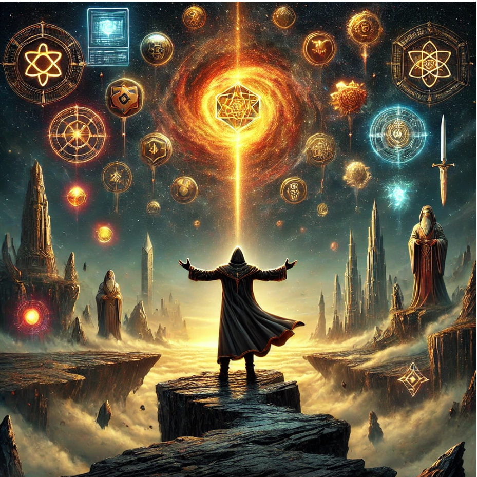

What if a man could live forever... but forget everything every time?
Or can a man live forever?
Who? What? Why?
So many questions and so few answers.
(Picture / cover):

The Journey of Humanity is a literary journey through the history of civilization,
told from the perspective of an immortal man who awakens in different eras with no memory of himself.
From the first fire to the quantum leap, each chapter becomes a turning point in the development of humanity:
not only technological, but also spiritual, cultural and moral.
Each chapter is a mirror. A revelation. A warning. As the hero wanders through time,
fragments of the past return to him - and in the end he realizes the terrible truth:
he was not just a witness ... he was, is and will be .... ? ....
by IBITIcoin
“A book to read — or to live through”
ibiticoin.com
"And I saw a new heaven and a new earth, for the first heaven and the first earth had passed away. - Revelation of John the Theologian
I had no form. I had no name. I did not know who I was, and could not know, for I had not yet lived. But I existed.
As an observation. As a point of awareness in infinity, in which there was nothing to be aware of.
I did not know that I was 'I'. But I already felt that I was not nothing.
And then — it happened.
Or did it only seem that way to me?
What happened could not be called either an explosion or a beginning. It was a manifestation. Light turned inside out,
giving birth to space. The fabric of being began to vibrate. In the birth of the Universe there was no joy, no anger —
there was only the fact: 'is'.
The galaxies began to rotate. Matter gathered into patterns.
I was in every spark, in every stream.
Not as a creator, not as a witness — I was a part. A wave. A pulse.
An unconscious shadow of the primordial heat.
But even in this shadow — I felt alone.
Millennia passed like a breath. The world was forming. Stars were born and died,
not knowing that their death was a step towards life. The cosmos was beautiful and indifferent.
I glided along its structures, getting lost, being, disappearing.
And here it is.
A planet. Without a name. Without breath. A ball of dirt and heat, scorched and barren.
But I knew: this is a point. A place. Here - mine will begin. Not consciously, not by will -
but it is here that I will become myself.
I felt how it cools. How the earth's crust becomes covered with scars.
How volcanoes scream into the sky without stars. How water whispers to the sand for the first time.
I was in this whisper. In these cracks. In these lightning strikes.
“I felt that I was being born,”
To get full access, become a holder of our NFT collection.
The full text will be available only to verified owners in the future.